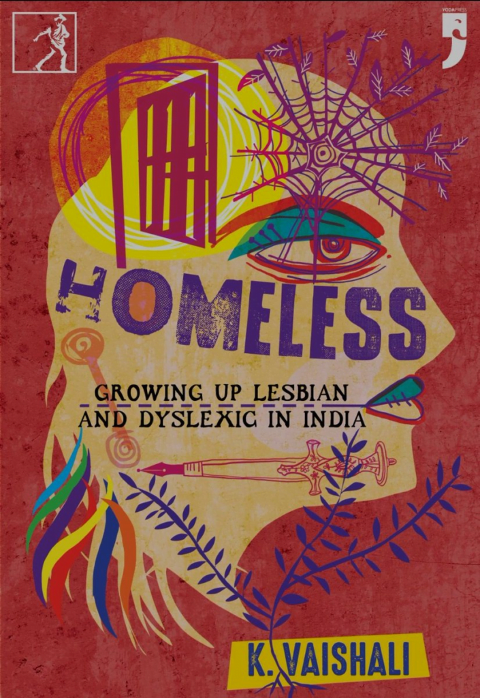

This is a must-read for all interested in the financial health of the country as well as those who want to know about the sensational events that led up to the far more sterile stock-market operations of the present day.
Classical Indian Philosophy
Peter Adamson and Jonardon Ganeri present a lively introduction to one of the world's richest intellectual traditions: the philosophy of classical India.They begin with the earliest extant literature, the Vedas,and the explanatory works that these inspired, known as Upaniṣads.
Daddy issues
What comes out is a tsunami of pain and violence that crashes across the Kentucky landscape carrying away the lives of anyone close to him. In this brutally honest novel, Howard McEwen explores the meaning of manhood and fatherhood in a modern America.
My Life and Struggle
The life story of a man of peace and non-violence, born amidst mayhem and conflict across the Sub-continent, still carries a powerful message in the turbulent times we live in. The autobiography of Bacha Khan in English, for the first time in a lucid translation from the original Pakhto
The Last to vanish
New York Times bestselling author Megan Miranda returns with a gripping and propulsive thriller that opens with the disappearance of a journalist who is investigating a string of vanishings in the resort town of Cutter's Pass—will its dark secrets finally be revealed?
Homeless

This is the story of Vaishali's relationship with her many truths and the truths of many young people in India.After discovering she's lesbian and dyslexic at 20, Vaishali begins to untangle her anxieties around reading and writing.